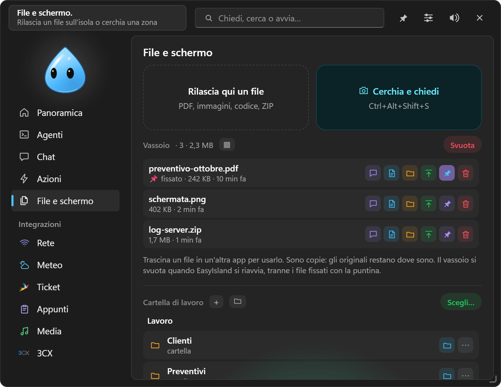
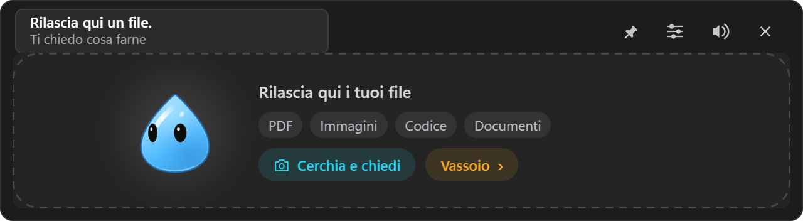
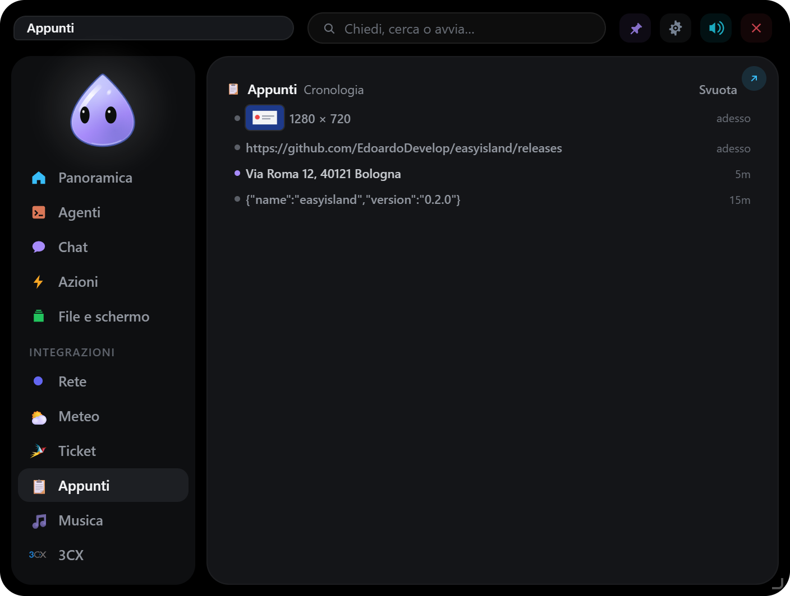

File e schermo
Rilasciare file, il Vassoio, la cartella di lavoro, Riquadra e chiedi, Registra, ZIP e le proposte al momento giusto.

#Rilasciare un file
Trascina un file sull'isola (si apre anche se è impostata «solo con un clic»): il personaggio diventa una scatola, lo inghiotte e chiede cosa farne: fare una domanda alla chat, eseguire un'azione rapida che lavora sui file, oppure, per uno ZIP, Estrai…. Una cartella rilasciata finisce come percorso nel campo della chat.

#Il Vassoio
I file rilasciati, le zone dello schermo, le esportazioni della chat, i documenti delle integrazioni personali, i file arrivati da Telegram: tutto passa dal Vassoio, in elenco o a griglia.
- Trascina un file del Vassoio in un'altra app (mail, chat, cartella).
- Chiedi alla chat, Apri, Mostra nella cartella, Copia.
- 📌 Fissa: i file fissati restano dopo il riavvio; gli altri si svuotano a ogni avvio.
- L'icona verde lo sposta nella cartella di lavoro.
Sono copie: gli originali non vengono toccati.
#Cartella di lavoro
Una cartella del PC scelta da te con Scegli… (qui o in Impostazioni → Chat). Sotto il Vassoio la sfogli: doppio clic per entrare o aprire, «..» per salire, + nuova cartella, ▦ griglia o elenco, l'ordine (nome A→Z o Z→A, più recenti o meno recenti; le cartelle restano prima), trascinamento verso altre app. Su ogni voce: Chiedi alla chat, Apri, e in «⋯» Rinomina, Sposta…, Nel Vassoio, Copia percorso, Cestino (il Cestino di Windows: niente si cancella per sempre).
La chat la legge senza chiedere e ci sposta i file del Vassoio (con conferma); con la modalità terminale è la cartella in cui lavora. Da Telegram: /cartella la mostra a pulsanti e ti manda i file. Ogni percorso è controllato: niente esce dalla cartella.
#Riquadra e chiedi
Ctrl+Alt+Shift+S, o il riquadro Riquadra e chiedi: lo schermo si ferma e si scurisce. Trascina da un angolo all'altro per riquadrare una zona e accanto compaiono:
- Chiedi…: scrivi la domanda e Invio, la chat si apre con la zona;
- le tue azioni rapide;
- Copia immagine;
- Copia testo, riconosciuto da Windows (OCR locale);
- Nel Vassoio.
Esc o il tasto destro annullano. Utile per farsi spiegare una finestra d'errore.
#Raccolta
Per mettere da parte pezzi presi da più app e poi farli elaborare tutti insieme alla chat: un preventivo con prodotti e prezzi da più fornitori, un confronto, una ricerca.
- Seleziona del testo in qualsiasi app (sul sito del fornitore la riga con nome e prezzo) e premi Ctrl+Alt+Shift+R. L'isola dice «Nella raccolta: 3» e puoi continuare. Ogni voce tiene la sua fonte: il programma, il titolo della finestra e, se copi da Chrome o Edge, l'indirizzo della pagina.
- Da Riquadra e chiedi, Nella raccolta aggiunge una zona dello schermo: il testo letto da Windows più l'immagine.
- In File e schermo la Raccolta ha un nome e, se vuoi, i campi da ricavare (per esempio «Prodotto, Prezzo, Fornitore»). La ✕ toglie una voce, Svuota le toglie tutte.
- Chiedi alla chat allega tutta la raccolta. Con i campi, la chat li ricava per ogni voce e li mostra in una tabella, poi aspetta la tua domanda («fammi il preventivo con ricarico del 20 %»).
C'è una raccolta alla volta e resta anche dopo il riavvio, finché non la svuoti. La scorciatoia si cambia in Impostazioni → Azioni rapide.
#Registra
Nella scheda File e schermo, Registra cattura:
- una conversazione (microfono e audio del PC, anche l'altra parte di una chiamata);
- lo schermo intero;
- una sola finestra, anche se coperta da altre.
Mentre registri, accanto al personaggio ci sono il punto rosso, il tempo e Stop, sempre visibili. Il file va in Video\EasyIsland (o la cartella che scegli) e nel Vassoio. Niente dipendenze: usa le API di Windows.
#ZIP
Rilasciando uno ZIP: Estrai… mostra cosa contiene e lo estrae in una cartella nuova accanto all'originale, in Download o sul Desktop.
#Proposte al momento giusto
L'isola nota cosa succede sul PC e propone il passo dopo con un clic, senza mai coprire quello che stai facendo:
- Download finito: apri, mostra nella cartella, nel Vassoio, chiedi alla chat; per uno ZIP, estrai.
- Errore copiato (con gli Appunti accesi): «Spiegamelo».
- Server di sviluppo partito (una porta nuova in ascolto da un programma di sviluppo): apri nel browser.
- Password o chiave copiata da un gestore di password: togli dagli appunti dopo un po'.
Contano come avvisi: «Solo permessi» e «davanti al cliente» le tengono lontane.
#Appunti
L'integrazione Appunti tiene gli ultimi 30 testi e 10 immagini copiati, più quelli fissati, solo in memoria: clic per incollare nell'app in primo piano, oppure copia, trasforma (MAIUSCOLO, minuscolo, una riga, senza spazi, JSON, URL), fissa, elimina; sulle immagini Chiedi alla chat. Ciò che i gestori di password segnano come privato non viene registrato. Ctrl+Alt+H la apre.
